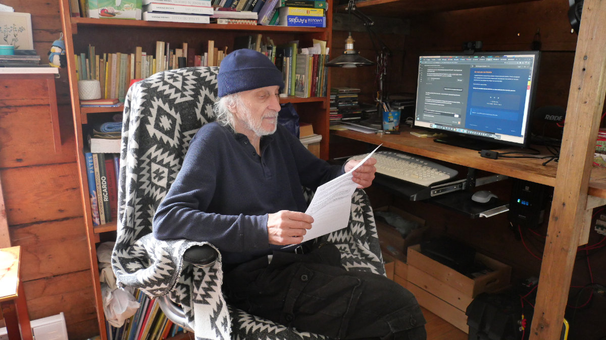

Il y a quelque chose d'indécent dans la façon dont ça se passe, année après année.
En janvier, le retraité ouvre son relevé de pension. Il voit le chiffre : +2,6 % cette année. Il se dit que c'est mieux que rien. Puis il reçoit l'avis de son propriétaire : le loyer monte de 5,9 %. Puis il fait son épicerie. Puis il se tait — parce que se plaindre à son âge, ça fait mauvaise figure.
C'est exactement sur ce silence que compte le système.

Le décrochage silencieux
Les pensions suivent l'Indice des prix à la consommation — une moyenne générale qui ne reflète pas le panier réel des aînés : plus de logement, plus de soins de santé, moins de transport. Ce sont précisément les postes où l'inflation a frappé le plus fort.
« Chaque année où la pension prend du retard sur le coût réel de la vie, ce retard est permanent. Il s'accumule comme une dette que personne ne reconnaît. »
Pendant ce temps, les travailleurs ont des leviers : négociation, grève, mobilité. Le retraité n'en a aucun.
Le poids politique qu'on n'a pas
Les aînés votent massivement. Pourtant aucun parti ne propose de mécanisme structurel pour protéger leur pouvoir d'achat. Les organismes comme la FADOQ ou l'AQDR font un travail sérieux — mais ils ne peuvent pas déclencher une grève ni créer une crise politique.
Les partis savent que les retraités se plaindront… et voteront quand même.
Ce n'est pas une fatalité
L'appauvrissement progressif des retraités n'est pas une loi de la nature. C'est le résultat de choix politiques qui se renouvellent chaque année, discrètement. Une société qui s'enrichit collectivement peut décider de protéger ceux qui l'ont bâtie.
Elle choisit de ne pas le faire.
Tant que les retraités resteront silencieux, ce choix continuera de se prendre sans eux.
— Gil Bourhis
Avril 2026 · Partie I de II